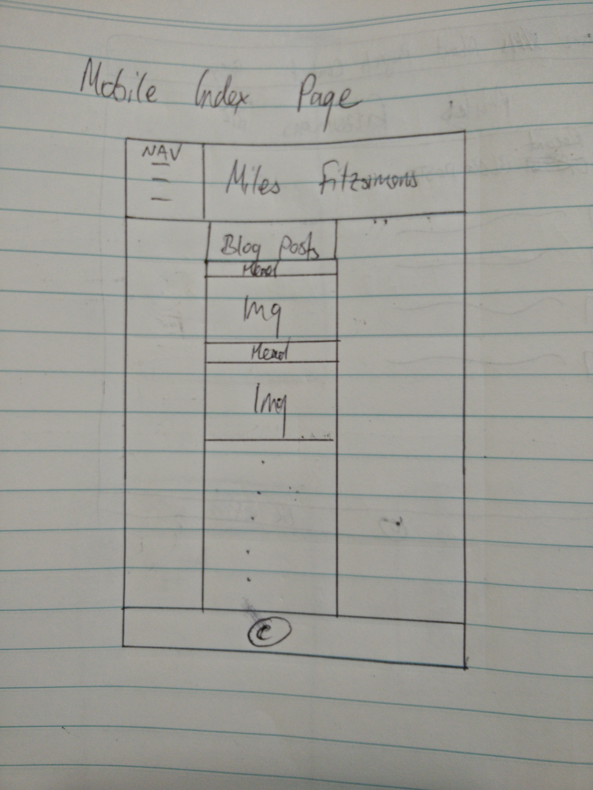
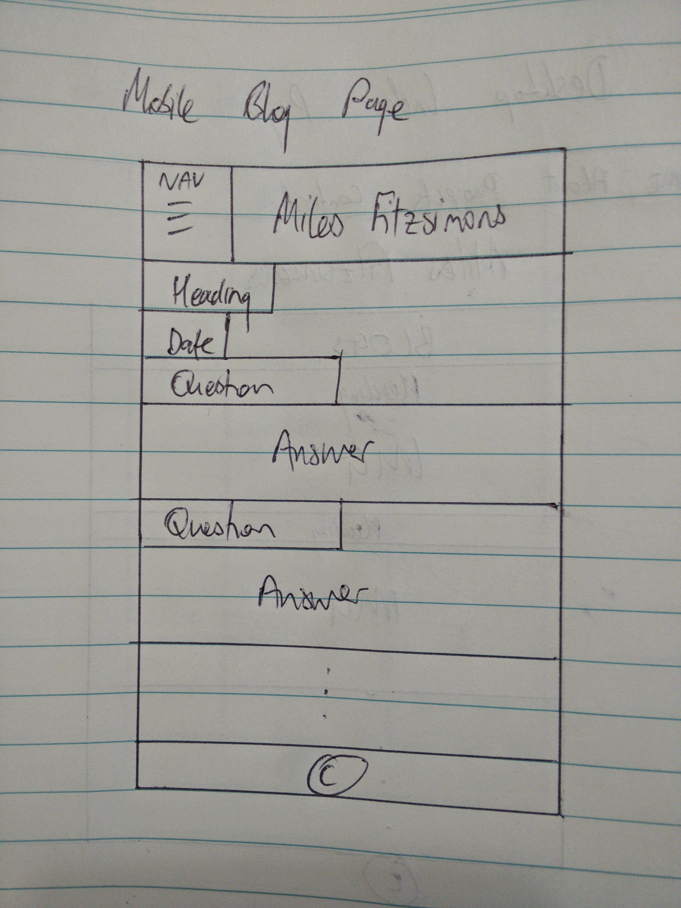
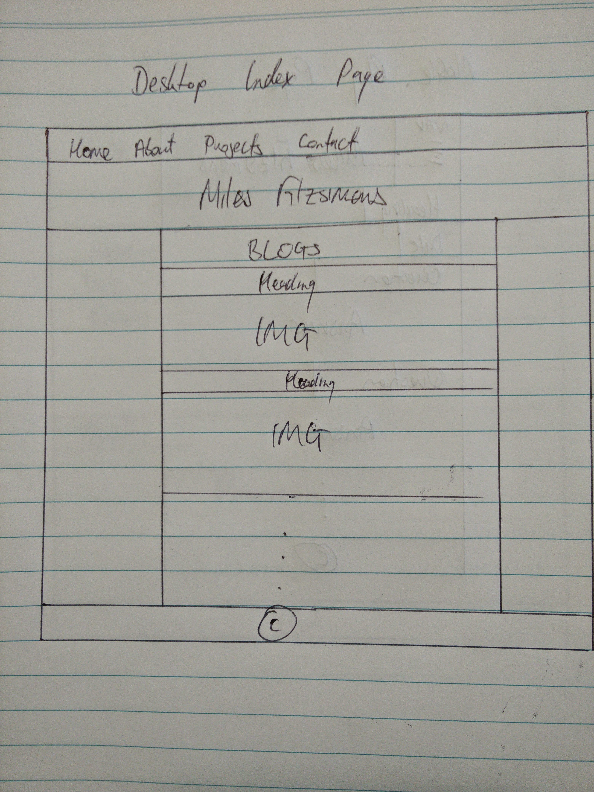
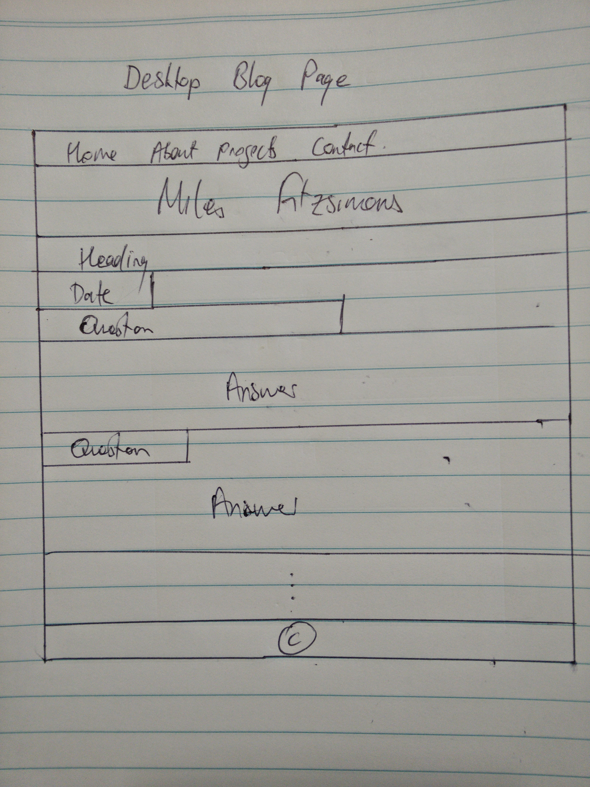

Technical Part 3
21 April 2016
What is a responsive website? Why is responsiveness important?
A responsive website is a website that is designed to provide optimal viewing and interaction experience (i.e, easy reading and navigation) across a wide range of devices with varying screen sizes. For example, a website may be viewed on a mobile phone or a desktop computer and anything inbetween. A responsive website changes its layout according to the viewing environment. For example, a website may include a sidebar that disappears when viewed on a mobile phone.
Responsive website design is important because mobile traffic accounts for a large proportion of total internet traffic. In particular, some studies show that mobile traffic accounts for more than half of total internet traffic.
What is mobile first design? Why is it important?
Mobile first design is the practice of designing the mobile (i.e, smallest screen) view of a website before designing larger screen views, such as a desktop computer view. Mobile devices typically have the smallest amount of screen real estate and so it is important to deliver to the user only the most important information in mobile view. This is often the hardest part of the design. Once the mobile view has been determined, designing for other devices will be easier and the heart of the UX for bigger devices has essentially been designed.
What are frameworks? What are their pros and cons?
A CSS framework is a pre-prepared style sheet provided by a third party that can be used as the basis of one's website design. CSS frameworks typically provide a number of features including: a reset style sheet (or normalisation) for a consistent view across different browsers and browser versions; a grid layout, which can be useful for responsive website design; typography styling; tooltip, button, element and form styling; and GUI styling, such as accordions, tabs and carousels. This website was designed using the Skeleton framework.
Frameworks make getting a website online and function quick and easy. They are often well tested and reliable and can make style decisions easier for the developer (if they want to rely on default styles). However, things can get complicated when a developer wants to override the default styles. This can lead to code and class/ID bloat. Further, a developer may not fully understand the framework code, but would if they built their site from scratch. This could lead to problems. Finally, a framework can be updated by its provider. This can lead to problems with sites relying on the framework and puts an onus on developers to similarly update their sites to overcome such problems.
What is a wireframe? Why do we use it?
A wireframe is a visual guide that represents the skeletal framework or structure of a website. A wireframe depicts the page layout arrangement of the website’s content, including interface elements and navigational systems, and how they work together. Wireframes can be hand sketched or created with software.
Wireframes guide developers to build a website that looks and functions as the designer intends. Wireframes can be used by many different parties during the initial design phase of building a website. For example, developers use wireframes to get a more tangible grasp of the site’s functionality. Designers use them to push the UI design process. User experience designers and information architects use wireframes to show navigation paths between pages.
My wireframes




Which aspects of the wireframes were difficult to implement?
You will see that my current website design is a bit different to the wireframes. I initially wanted my desktop-view horizontal navigation bar to turn into a drop down navigation menu in mobile view. There are hacks to do this using only CSS, but this is really a job for JavaScript. Instead, I designed the navigation links to appear like buttons in mobile view.
The layout of my website is similar but I made a few different stylistic choices when building the website, such as centering the headings on the blogs. I simply think it looks better this way. I also decided to put my contact information in the footer rather than in a separate page.